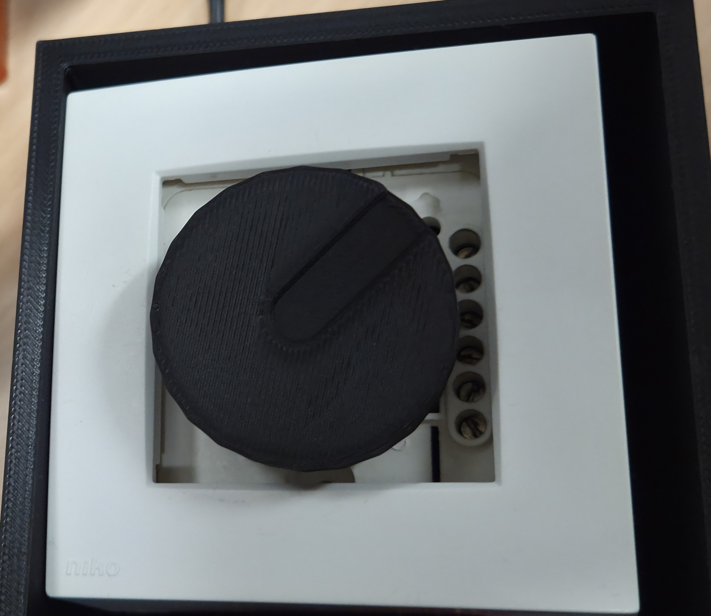
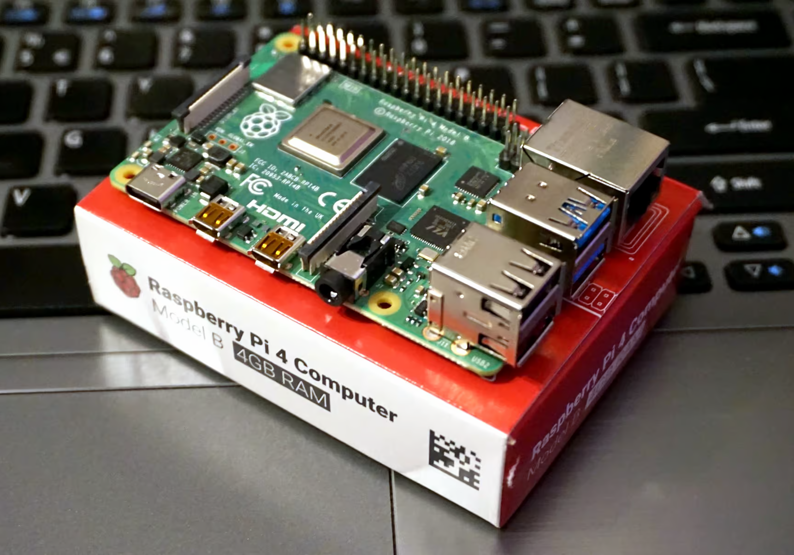
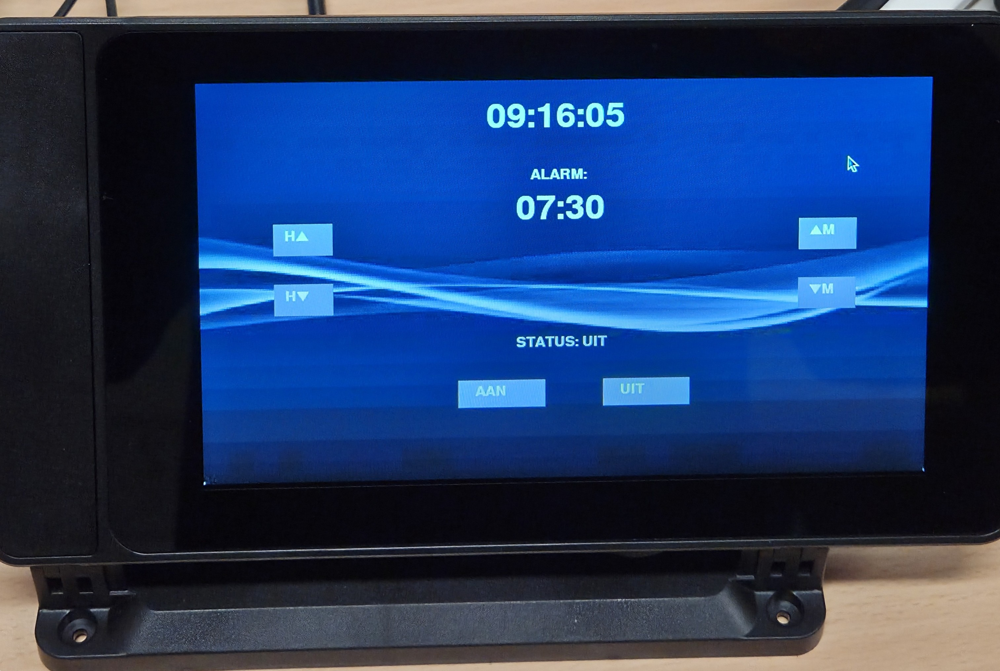

Introductie
Voor de meeste mensen is een wekker synoniem aan een irritant geluid. Maar wat als geluid geen optie is? Voor doven en slechthorenden zijn standaard wekkers vaak beperkt tot een abrupte, heftige schok. Dat kan beter, slimmer en aangenamer.
Met dit project combineren we industriële precisie met moderne techniek om de ultieme wek-ervaring te creëren. Het hart van de installatie is een Raspberry Pi, die als 'brein' fungeert en de tijd, gebruikersinterface en commando's beheert.
Het unieke aspect is de aansturing via een snelheidsregelaar. Hiermee kunnen we de snelheid en intensiteit van de trilmotor nauwkeurig regelen, wat zorgt voor een geleidelijke en efficiënte wekervaring.
Probleemstelling
Een dove jongen wordt niet wakker. Waar een gewoon alarmgeluid voor de meeste mensen vanzelfsprekend is, blijft het voor iemand die niet kan horen betekenisloos. Dit kan leiden tot praktische problemen, zoals te laat komen, maar ook tot risico’s in noodsituaties.
Voor dove of slechthorende personen is het ontbreken van auditieve prikkels een constante uitdaging. Traditionele wekkers zijn ontoegankelijk, waardoor alternatieven nodig zijn.
Een wekker speciaal ontworpen voor doven biedt een oplossing: trillingen, lichtsignalen of een combinatie. Dit vergroot zelfstandigheid, veiligheid en gelijkheid.
Mogelijke ideeën
Een trilwekker maakt gebruik van sterke vibraties om iemand op een stille en doeltreffende manier te wekken. Dit kan met een apparaatje onder het kussen of een polsband die trilt op het ingestelde tijdstip.
Felle lichtflitsen of een automatisch aangeschakelde lamp zorgen voor een duidelijke visuele prikkel als wek- of waarschuwingssignaal.
De gebruiker kan zelf bepalen welke prikkel het meest effectief is: vibratie, lichtsignalen of een combinatie. Zo wordt het systeem flexibel en gebruiksvriendelijk.
Onze oplossing
- Voor onze problemen moesten we natuurlijk ook oplossingen vinden.
We kozen voor een zeer sterke trilmotor, dit leverde een te sterke trilling op.

-
Door de motor te fixeren en te testen onder matten in de gymzaal, konden we de trilling optimaliseren voor onze toepassing.
Dit werd opgelost door een snelheidsregelaar of dimmer te gebruiken.
Nu kan de gebruiken de sterkte van de trilling zelf bepalen.

-
We konden niet veel doen met de Arduino en een korte evaluatie hebben we beslist om over te stappen naar een Raspberry Pi.
Dit is een mini computer die we aansturen via een code op de Raspberry Pi zelf.


-
Het hele interface is gemakkelijk te gebruiken dankzij een touchscreen.
Deze overstap bleek over de komende weken veel gunstiger te zijn voor ons project.

-
Om de spanning van de Raspberry Pi te verhogen hebben we gebruik gemaakt van een relais.
Dit alles werd in een 3D geprinte omhuizing gemonteerd.